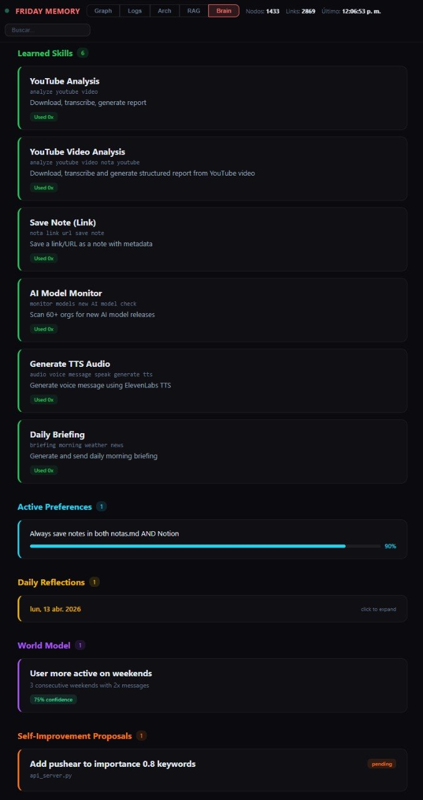

Technical details
— What it really is
A self-evolving AI assistant that runs 24/7 on a standard Windows, Linux, or macOS machine. It communicates via Telegram, runs scheduled tasks autonomously, manages files and projects, and maintains persistent memory across sessions.
It also learns from its own behavior: acquires new skills, reflects on daily performance, infers user preferences from repeated corrections, and proposes its own improvements. Powered entirely by Claude Code on the $100/month Max Plan — no custom AI backend, no fine-tuned models, no orchestration framework. The only custom code is a lightweight Flask server for persistent memory and the self-evolving subsystems.
— How it works
Claude Code sits at the center, connecting to external services through MCP (Model Context Protocol) plugins and shell tools. A CLAUDE.md file acts as the system prompt, defining behavior, available tools, and cron schedules.
User (Telegram) ---> Claude Code (with MCP plugins)
|
|--> Memory API ---> SQLite (conversations, memories, embeddings)
|--> Self-Evolving ---> Skills, reflections, preferences, world model
|--> Knowledge Base ---> Notes, wiki, structured data (Notion MCP)
|--> GitHub ---> Repos (push, commit, PR)
|--> Voice API ---> TTS / STT (ElevenLabs)
|--> Email (MCP) ---> Send, receive, forward (AgentMail)
|--> Web Search/Fetch ---> News, research, data
|--> Cron system ---> Recurring autonomous jobs
|--> Local tools ---> Shell, scripts, system utilities

— Why no agent framework
Agent frameworks add custom runtimes, orchestration code, deployment pipelines, and often their own API costs. Claude Code already is the runtime. It has native tool use, MCP plugin support, cron scheduling, sub-agent spawning, file I/O, git, and shell access built in. There is no glue code between the LLM and the tools.
One plan, one CLI, one model — and let the model do what it was designed to do.
— The stack
| Brain | Claude Code CLI (Opus 4.7, 1M context) |
| Interface | Telegram (via MCP plugin) |
| Memory | Flask + SQLite + embedding-based RAG |
| Knowledge | Notion (via MCP plugin) |
| Voice | ElevenLabs TTS / STT |
| Scheduling | Claude Code built-in cron system |
| Cost | $100 / month (Anthropic Max Plan) |
— Full capability list
- Scheduled briefings — weather (Open-Meteo), forex/crypto (DolarAPI, ExchangeRate), AI news, movies (YTS)
- Autonomous monitoring — scan 60+ orgs on HuggingFace, blogs, and aggregators for new AI model releases
- Note-taking — save links, text, and structured data to Notion and local markdown
- Voice messages — transcribe audio (ElevenLabs Scribe STT), respond with synthesized speech (ElevenLabs TTS)
- Video analysis — download, transcribe (YouTube subs / ElevenLabs), generate structured reports via Groq / OpenRouter
- Email handling — check, draft, send, and forward emails via AgentMail MCP
- Git operations — commit, push, create PRs, manage repositories via GitHub API + git CLI
- Web research — search, fetch, summarize, and report back
- Self-healing crons — monitors its own scheduled jobs and recreates any that expire
- Proactive messaging — initiates conversations based on memory and context, not just reactive
- Skill acquisition — extracts reusable patterns from completed tasks and stores them with trigger patterns
- Daily self-reflection — nightly cron reviews logs to identify mistakes, successes, emerging patterns
- Preference learning — analyzes feedback history to infer rules from repeated corrections
- World modeling — builds a behavioral model of the user with confidence scores and expiration dates
- Self-improvement proposals — creates formal proposals with diffs; never applies changes without approval
- Memory API health monitoring — periodic health checks with automatic restart on failure
— Scheduled jobs (18 crons)
The system runs 18 autonomous cron jobs that keep it alive and learning — 10 original plus 8 added by the v2 harness. The heartbeat and briefing crons act as watchdogs, verifying all jobs are active and recreating any that are missing.
| 1 | Email check | every 1h | inbox scan + notify |
| 2 | Cron watchdog | every 6h | verify no crons expiring |
| 3 | Daily briefing | daily ~9am | weather, markets, news, proposals |
| 4 | Heartbeat | every 1h | health + social check-in |
| 5 | Monthly usage | end of month | api usage report |
| 6 | Reflection | every 12h | review logs for patterns |
| 7 | Preference learning | daily (night) | infer rules from feedback |
| 8 | AI model monitor | daily 10:17 | new releases + AGI forecast |
| 9 | Memory API health | every 3h | auto-restart on failure |
| 10 | Weekly summarization | sunday | compress old logs |
| 11 | Goal prioritizer (v2) | daily 9:37 | flag stuck / near-deadline goals |
| 12 | Memory decay (v2) | sunday | confidence half-life on beliefs |
| 13 | Daily metrics (v2) | daily 22:23 | hallucination + calibration |
| 14 | Predictions resolver (v2) | daily 21:53 | close out past-due predictions |
| 15 | Skill promotion (v2) | daily 02:37 | draft → beta → stable |
| 16 | Experiments runner (v2) | every 6h | A/B via sandbox dry-runs |
| 17 | World model grower (v2) | daily 06:53 | detect recurring topics |
| 18 | Auto-audit (v2) | 3x / day | integrity scan of core tables |
— Memory server
A single Flask + SQLite server handles conversation logging, long-term memory, entity tracking, key-value storage, and RAG with vector embeddings. Embeddings are stored as BLOBs in the same SQLite file — no external vector database.
- Conversation logging — every message stored with timestamp, role, channel, auto-classified importance (0.0–1.0)
- Importance scoring — dynamic keyword-score pairs stored in the database; hit counts tracked automatically
- Long-term memory — typed entries (user, feedback, project, reference) with free-text search
- Semantic search — cosine similarity over 3072-dim embedding vectors
- Hybrid search — FTS5 keyword + semantic combined via Reciprocal Rank Fusion, weighted by importance
- Weekly summarization — compresses old logs without deleting originals
- Web visualization —
/graphserves Graph, Logs, Architecture, and RAG tabs (D3.js force-directed) - Disaster recovery —
/backup/exportand/backup/importswap whole-DB snapshots (v2.9.0+)

— Self-evolving system
Five subsystems work together to make the assistant improve over time:
- Skill acquisition — extracts patterns from solved tasks; saves them as reusable skills with trigger patterns and step-by-step procedures
- Daily self-reflection — nightly cron asks what went well, what went wrong, what patterns emerge; conclusions feed future behavior
- Preference learning — analyzes feedback history for repeated patterns, infers rules automatically
- World model — builds a model of user behavior over time (activity, topics, correlations) with confidence + expiration
- Self-improvement proposals — formal proposals with diff preview; user approves or rejects each via Telegram
All of this runs on the same memory server with no additional infrastructure. Visible in the Memory Graph's Brain tab.

v2 update — April 2026: extended with a full cognition harness: goal engine, hierarchical plans, three-layer memory, causal world model, verifier/sandbox, experiment engine, skill compiler, and a metrics framework. 13 new tables, ~70 endpoints, 8 new crons — all additive.
— The $100 question
The entire system runs on a single $100/month Anthropic Max Plan. No cloud VMs running inference. No LangChain, no AutoGPT, no agent framework. Just Claude Code on a Linux machine with MCP plugins.
The key insight: Claude Code is not just a coding assistant — it is a general-purpose autonomous agent runtime. Give it tools, instructions, and a schedule, and it becomes a full 24/7 assistant.
— Start command
claude --channels plugin:telegram@claude-plugins-official --dangerously-skip-permissions
Claude Code reads your CLAUDE.md, connects to Telegram, creates all cron jobs, and starts running autonomously.